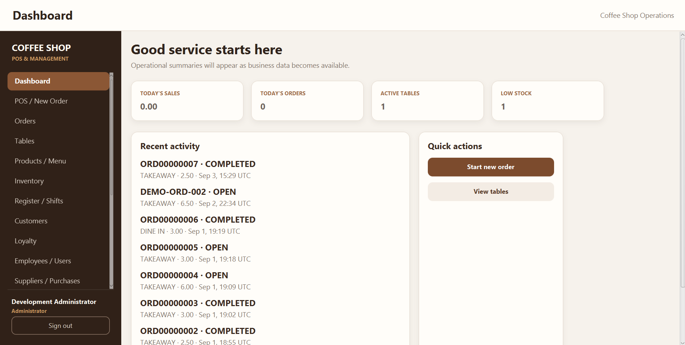
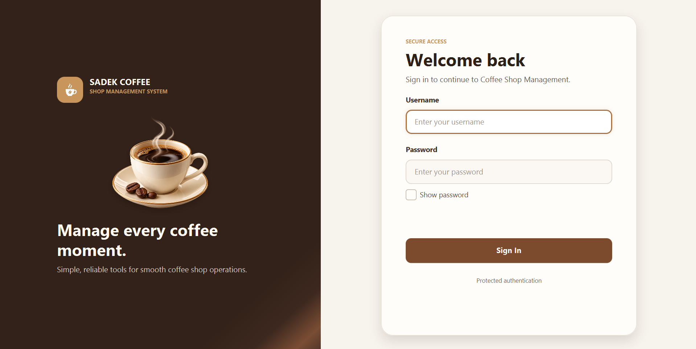
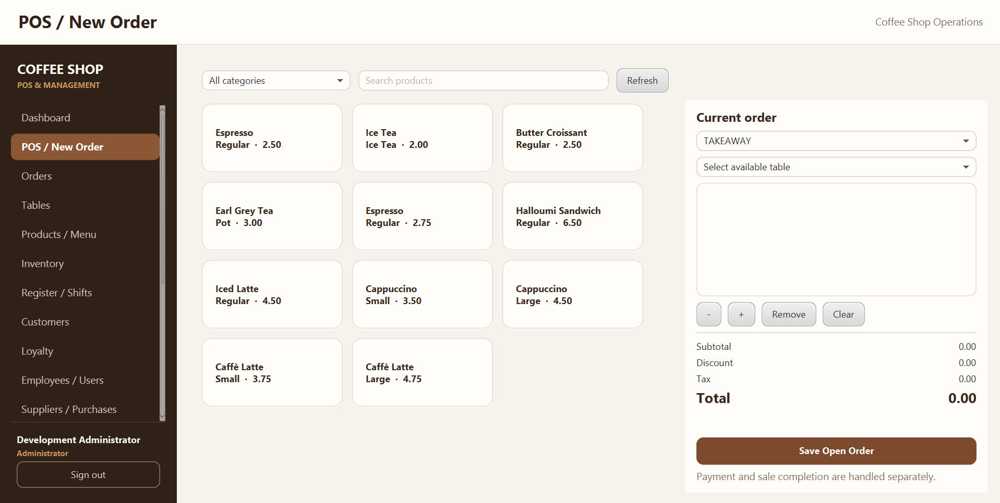
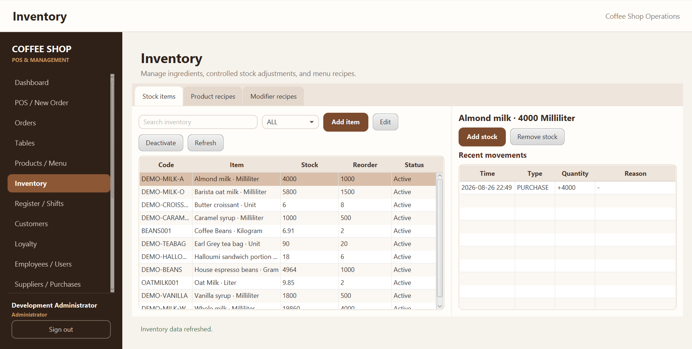
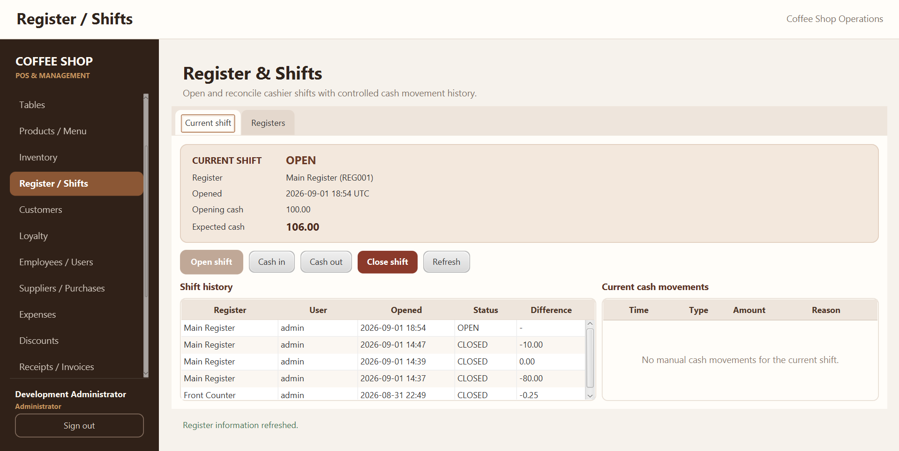
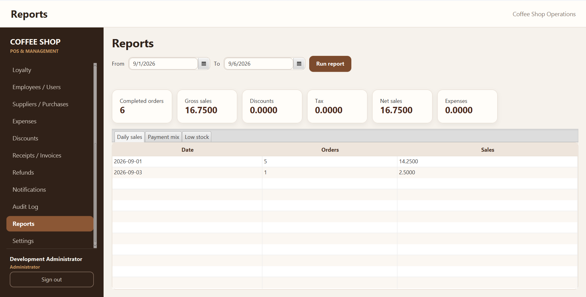

POS & Checkout
Create orders, select products and modifiers, and complete customer checkout efficiently.
COFFEE SHOP MANAGEMENT SYSTEM
A complete desktop management system built to handle sales, orders, inventory, customers, employees, and daily operations in one connected workspace.

PROJECT OVERVIEW
Sadek Coffee Shop Management System is a desktop application developed to organize and manage the core operations of a modern coffee shop through one integrated platform.
The system combines point-of-sale operations, order management, inventory control, customer management, employee access, reporting and administrative tools within a structured and responsive JavaFX interface.
Manage daily operations from one connected system.
Different workspaces and permissions for different roles.
MAIN FEATURES
Create orders, select products and modifiers, and complete customer checkout efficiently.
Manage customer orders, dine-in tables and operational order workflows.
Manage products, variants, ingredients, inventory levels and stock movements.
Maintain customer records and manage loyalty accounts and transactions.
Control cashier registers, shifts and cash movements throughout the business day.
View useful operational information and business reports through a centralized dashboard.
Track suppliers, purchases and business expenses from within the application.
Role-based workspaces support Administrator, Manager and Cashier access.
PROJECT SHOWCASE
ADMINISTRATION





TECHNOLOGIES USED
DEVELOPER
Developed by Sadek Ghanem
Computer & Communications Engineering Student
Focused on desktop application development, database design, software architecture and user experience.
Back to Top ↑